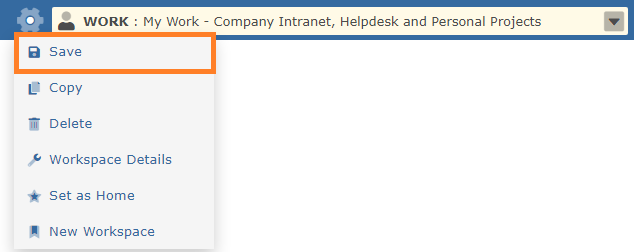

A workspace is set to display the data as per the filter criteria. Changing the filter does not automatically update the workspace.
Click the save button to update the workspace with your filter changes.

If the workspace is shared with co-workers, then they automatically receive the saved changes as well.